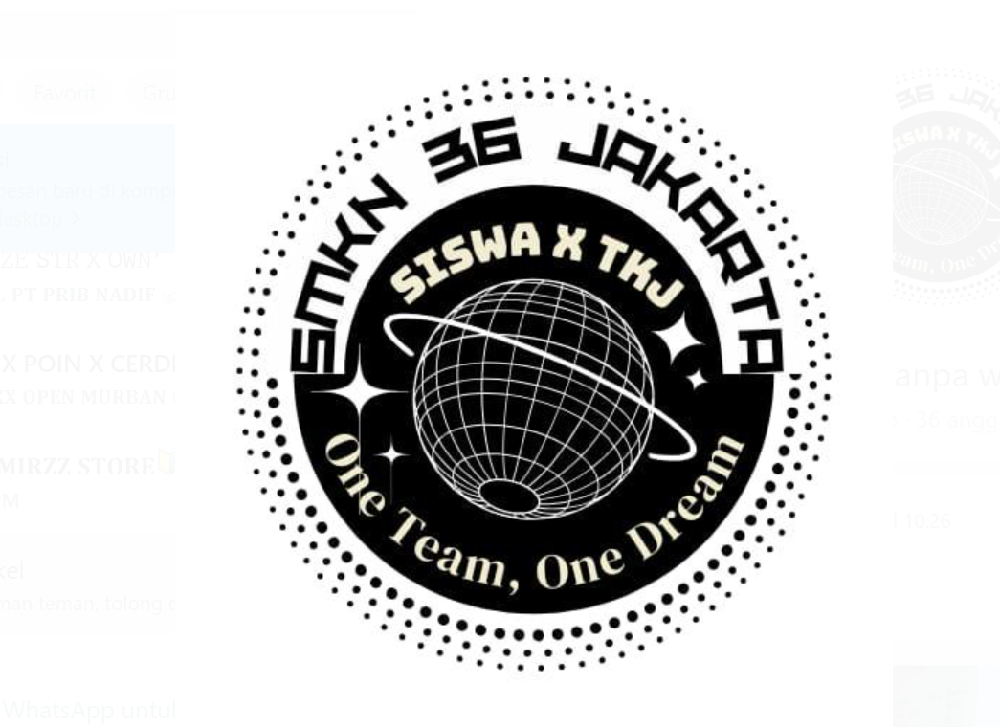

mau masuk web Login Dulu
Siapa Nama Kamu :
Masuk
Kelas 10Tkj Web
SMKN 36
Hai {nama},Selamat datang di web Kelas 10TKJ. Silakan menjelajah isi dari web kelas 10TKJ ini.
Website Made By NUUR-DEV(RIZQI)
Made By RIZQIDev

Komentari Website